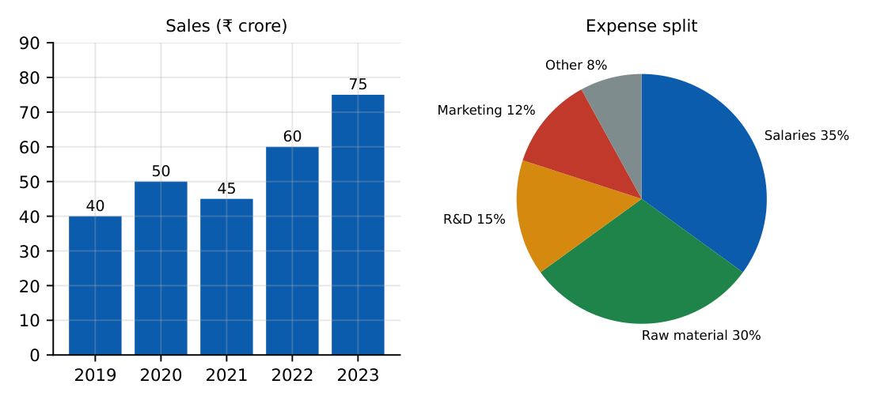

Data Interpretation
In this chapter
Reading tables, bar charts, line graphs and pie charts; percentage change, averages, ratios and compound growth from the data; combining two charts (for example a pie of expenses with a bar of sales). Accuracy comes from locating the right numbers first.
8.1 Reading charts and tables
Percentage change \(=\dfrac{\text{new}-\text{old}}{\text{old}}\times100\). Percentage of total \(=\dfrac{\text{part}}{\text{total}}\times100\). Average \(=\dfrac{\text{sum}}{n}\). Ratio \(=\dfrac{\text{item}_1}{\text{item}_2}\).
Pie chart: central angle \(=\dfrac{\text{percentage}}{100}\times360^\circ\) (\(35\%\to126^\circ\)). Segment value \(=\) percentage \(\times\) total.
Compound annual growth rate \(\mathrm{CAGR}=\left(\dfrac{\text{final}}{\text{initial}}\right)^{1/n}-1\) over \(n\) periods.
Percentage points differ from percentages: a rise from \(20\%\) to \(25\%\) is \(5\) percentage points but a \(25\%\) increase.

Sales (in crore rupees): 2019: \(40\); 2020: \(50\); 2021: \(45\); 2022: \(60\); 2023: \(75\). Expenses are \(60\%\) of sales; the split is salaries \(35\%\), raw material \(30\%\), R&D \(15\%\), marketing \(12\%\), other \(8\%\).
(a) Growth \(2022\to2023\): \(\frac{75-60}{60}=25\%\). (b) Average sales \(=\frac{270}5=54\). (c) Year-on-year growth rates: \(2020\): \(25\%\); \(2021\): \(-10\%\); \(2022\): \(33.3\%\); \(2023\): \(25\%\), so \(2022\) has the highest growth. (d) Expenses in \(2023=0.6\times75=45\); marketing \(=0.12\times45=5.4\) crore; R&D \(=0.15\times45=6.75\) crore. (e) Salaries : R&D \(=35:15=7:3\). (f) CAGR \(2019\to2023\) (\(4\) periods): \((75/40)^{1/4}-1\approx17.0\%\).
8.2 Strategy
1. Read the title, axes and units (crore vs lakh, % vs absolute). 2. Note whether a chart gives percentages or values; a pie shows only shares. 3. Pull the two or three needed numbers before calculating. 4. Approximate when options are far apart (e.g. \(25\%\) versus \(30\%\)).
Tables with totals allow cross-checks: row and column sums must agree.
Caselets give the data in words; convert them to a small table first. For mixed data (two charts) combine them through the common quantity (total sales, total expenses). For line graphs read changes between points; steepest segment means the greatest change; for percentage change use the starting value as the base.
(i) Using the new value instead of the old as the base for percentage change. (ii) Confusing percentage points with percentage change. (iii) Applying a pie percentage to the wrong total. (iv) Mixing units (thousands vs lakhs). (v) Answering from the wrong year or series because two similar bars were read.
Write the three needed numbers on paper before computing. Use round-number approximations to eliminate options, then compute exactly only if two remain. Compare growths with fractions (\(\frac{15}{60}=\frac14\)) instead of decimals.
8.3 GATE problems
Use the data set of the example (sales bar chart and expense pie chart) for Q1–Q10.
Q1. The percentage growth of sales from \(2022\) to \(2023\) is (A) 15% (B) 20% (C) 25% (D) 33%.
Q2. The average yearly sales over \(2019\)–\(2023\) is (A) 50 (B) 54 (C) 60 (D) 75.
Q3. The central angle of the salaries sector in the pie chart is (A) \(108^\circ\) (B) \(126^\circ\) (C) \(135^\circ\) (D) \(144^\circ\).
Q4. The year with the highest percentage growth in sales over the previous year is (A) 2020 (B) 2021 (C) 2022 (D) 2023.
Answers: Q1 (C). Q2 (B). Q3 (B): \(0.35\times360=126\). Q4 (C): \(33.3\%\).
Q5. Expenses in \(2023\) are \(60\%\) of sales. The marketing expense in \(2023\) (crore) is (A) 5.4 (B) 9.0 (C) 4.5 (D) 7.2.
Q6. The compound annual growth rate of sales from \(2019\) to \(2023\) is closest to (A) 10% (B) 17% (C) 22% (D) 47%.
Q7. The ratio of the salaries expense to the R&D expense is (A) 7:3 (B) 3:7 (C) 35:12 (D) 2:1.
Answers: Q5 (A): \(45\times0.12\). Q6 (B). Q7 (A).
Q8. Total sales over \(2019\)–\(2023\) (crore): .
Q9. R&D expense in \(2023\) (crore, two decimals): .
Q10. The percentage fall in sales from \(2020\) to \(2021\): .
Answers: Q8: 270. Q9: \(0.15\times45=6.75\). Q10: \(\frac{5}{50}=10\%\).
Q11. Which are true for the data? (A) Sales rose every year. (B) The average sales is \(54\). (C) \(2022\) saw the highest percentage growth. (D) Salaries are the largest expense item.
Answers: Q11: (B), (C), (D). Sales fell in \(2021\), so (A) is false.
T1. Convert \(20\%\) to a pie angle. T2. A value rises from \(200\) to \(250\): percentage change? T3. Share rises from \(20\%\) to \(25\%\): change in percentage points?
Answers: T1: \(72^\circ\). T2: \(25\%\). T3: \(5\) points.
- Percentage change uses the old value; pie angle \(=\%\times3.6^\circ\); CAGR \(=(\text{final}/\text{initial})^{1/n}-1\).
- Identify units and whether a chart gives shares or values; combine charts through a common total.
- Approximate to eliminate options; compare with simple fractions.
- Percentage points \(\ne\) percentage change.